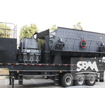

Cone Portable Crusher Overview
 portable cone crusher crushing process is according to the requirements of different composition "first crushed sieve", can also be composed of "screening and crushing" process, crushing station can be in accordance with the actual needs of coarse crushing, fine crushing combination for the two stage screening system, but also can be combined into a coarse fine three stage screening system, has the very high flexibility. The user can according to different raw materials and finished products, scale of different materials requirements using a variety of configuration.
Performance characteristics of portable cone crusher:
- the integration of the entire unit, compact layout of the facilities, expand the material stacking, transport space.
- mobility and flexible is conducive to the construction in the reasonable area, provides a more flexible working space for the whole breaking process.
- low material transportation costs, from the material from the scene and then crushing, processing of intermediate links, greatly reducing the material transport costs.
- direct and effective work function, can be used alone, can also according to customer requirements for material type, product process, process scheme more flexible configuration, the cost to reduce the maximum.
portable cone crusher suitable for
- for the ore, railway, highway and other construction waste reuse, while on the road or construction sites and site operation.
- processing the surface soil and other materials.
- river gravel stone, rock (limestone, granite, diabase, andesite), ore tailings, stone scurf artificially system sand.
Portable Crusher Gallery